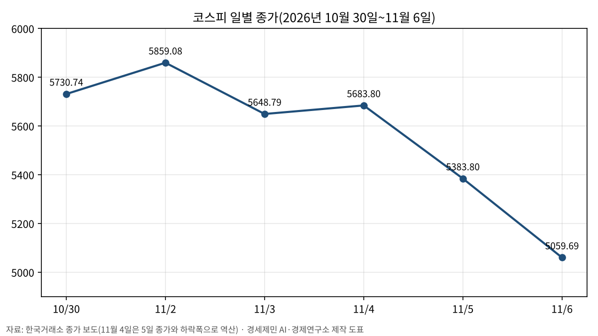
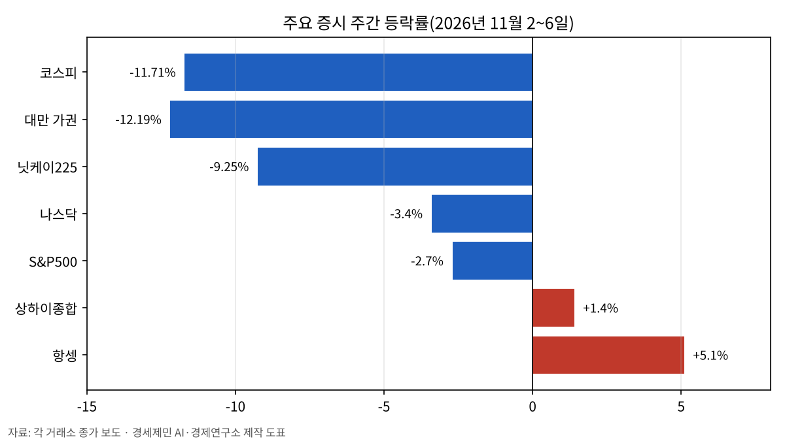

[주간 증시브리핑] 코스피 11.71% 하락, 외국인 순매도 72.6%가 두 종목
반도체 수출 259.4% 증가와 반도체 대형주 16~20% 하락
한국·대만·일본 급락, 중국·홍콩 상승
다음 주 변수는 미 소비자물가와 코어위브 실적
AI경제저널=김갑봉 기자 | 코스피가 11월 첫째 주(2~6일) 11.71% 내렸다. 10월 30일 종가 5730.74에서 11월 6일 5059.69로 떨어졌다. 코스닥은 724.38에서 644.27로 11.06% 내렸다. 6일 오전 9시 3분에는 코스피 1단계 서킷브레이커(지수가 8% 넘게 급락하면 거래를 일시 멈추는 장치)가 걸려 거래가 20분 멈췄다. 같은 주 미국 S&P500은 2.7%, 나스닥은 3.4% 내렸다.

외국인 10조원 넘게 순매도, 72.6%가 삼성전자·SK하이닉스
외국인은 한 주 동안 유가증권시장에서 10조3792억원을 순매도했다. 이 가운데 SK하이닉스가 5조3642억원, 삼성전자가 2조1752억원이다. 두 종목을 합치면 7조5394억원으로 외국인 순매도의 72.6%다(연구소 계산). 같은 기간 기관은 4조4428억원, 개인은 3조9582억원을 순매수했다.
삼성전자는 22만5000원에서 18만8700원으로 16.13% 내렸다. SK하이닉스는 141만8000원에서 113만2000원으로 20.17% 내렸다.
미국 선거, 데이터센터, 앤트로픽
3일 미국 중간선거에서 민주당이 상원과 하원을 모두 차지했다. 시장에서는 민주당이 인공지능(AI) 데이터센터 규제를 강화할 수 있다는 우려가 나왔다. 코스피는 5일 5.28% 내렸다. 그날 밤 미국 반도체 지수인 필라델피아 반도체지수가 12.25%, 나스닥이 5.52% 내렸고, 코스피는 다음 날인 6일 6.02% 더 내렸다.
6일(현지시간)에는 인공지능 투자 관련 보도 두 건이 나왔다. 외신은 마이크로소프트가 2023년 오라클과 맺은 AI 클라우드 임차 계약을 재계약하지 않고 종료하고 있다고 보도했다. 같은 날 앤트로픽 상장 공모주 잠재 매수자들이 기업가치를 1조2000억~1조3000억달러(1628조~1764조원) 선에서 논의하고 있다는 보도도 나왔다. 종전 거론 범위는 1조4000억~1조5000억달러(1899조~2035조원)였다. 이 글의 원화 환산은 6일 원/달러 환율 1356.6원을 적용한 연구소 계산이다.
반도체 수출 259.4% 증가, 그다음 주 대형주 하락
산업통상부가 1일 발표한 10월 수출은 1152억8000만달러(156조3888억원)로 1년 전보다 93.7% 늘었다. 반도체 수출은 564억4000만달러(76조5665억원)로 259.4% 늘어 전체의 49.0%를 차지했다(연구소 계산). 반도체 수출 259.4% 증가는 11월 1일에, 반도체 대형주 16~20% 하락은 그다음 주에 나온 숫자다.
한국·대만·일본은 급락, 중국·홍콩은 상승

대만 가권지수는 한 주 12.19%(5510.19포인트) 내렸다. 대만 TSMC는 6일 장중 9.82%까지 내렸다가 4.69% 하락으로 마감했다. 일본 닛케이225는 6만3290.11에서 5만7434.77로 9.25% 내렸다(연구소 계산). 반대로 홍콩 항셍지수는 5.1%, 홍콩 기술주 지수인 항셍테크지수는 8.6%, 상하이종합지수는 1.4% 올랐다.
금리·유가·환율
미국 연준 기준금리는 3.75~4.00%다. 6일 나온 10월 미국 비농업 고용(농업 부문을 뺀 일자리 수)은 16만5000명 늘어 시장 예상치(5만9000~6만5000명)를 웃돌았고 실업률은 4.1%였다. 고용 발표 뒤 금리선물 가격으로 계산한 12월 0.25%포인트 인상 확률(시카고상품거래소 페드워치)은 77% 안팎으로 올랐다(집계 시점에 따라 76.8~80%). 미국 10년물 국채금리는 6일 4.858%로 마감했다.
브렌트유는 6일 배럴당 98.32달러(13만3381원)로 마감했다. 미국 중간선거 결과로 이란 전쟁이 협상으로 끝날 수 있다는 기대가 유가를 끌어내렸다는 보도가 나왔다. 원/달러 환율은 1334.3원에서 1356.6원으로 22.3원 올랐다.
신용융자와 정부 대응
신용거래융자(증권사에서 돈을 빌려 주식을 사는 것) 잔고는 10월 12일 34조2887억원까지 불었다가 11월 5일 28조7715억원으로 5조5172억원 줄었다(금융투자협회 집계, 연구소 계산). 정부는 6일 긴급 시장상황점검회의를 열고 증권사의 신용융자 담보비율(빌린 돈 대비 계좌 평가액) 140% 유지 의무를 9일부터 3개월 동안 면제하기로 했다. 담보비율이 기준 아래로 떨어지면 증권사는 반대매매(담보 부족 계좌 주식 강제 매도)에 나선다. 미래에셋증권은 9일부터 내년 1월 31일까지 국내 주식 담보비율을 140%에서 130%로 낮추기로 했다.
다음 주 일정
10일 오후 10시 30분(한국시간) 미국 10월 소비자물가가 나온다. 11일 오전 7시(한국시간)에는 코어위브 3분기 실적 콘퍼런스콜이 열린다. 엔비디아 3분기 실적 콘퍼런스콜은 그다음 주인 18일 오전 7시(한국시간)다.
참고문헌
- 더스쿠프 강서구, 「외인 순매도 10조원의 72% '삼전닉스'… 국장 흔든 블루 웨이브 [주간 증시해설서]」, 2026.11.7, https://www.thescoop.co.kr/news/articleView.html?idxno=312205
- 이슈온 신현, 「코스피 한 주 11.7% 급락…서킷브레이커 속 외국인 이틀간 6조원 매도」, 2026.11.7, https://www.issueon.co.kr/news/articleView.html?idxno=14333
- THE Biz 신영욱, 「[주간증시온도계]美 AI 규제 공포에 증시 급랭…코스피 5000선도 겨우 사수」, 2026.11.7, http://www.the-biz.co.kr/news/articleView.html?idxno=730894
- 뉴스핌 김하영, 「10월 수출 1153억달러 '역대 2위'…반도체 564억달러 견인」, 2026.11.1, https://www.newspim.com/news/view/20261031000112
- 뉴스핌 양태훈, 「[증시 쇼크] ③ 정부, 시장안정책 다시 시험대…반대매매 부담만 줄여」, 2026.11.6, https://www.newspim.com/news/view/20261106000686
- 아주경제 최윤선, 「"한 달 새 반대매매 5300억"…빚투 잔고도 고점 대비 4조 감소」, 2026.10.23, https://www.ajunews.com/view/20261023145948356
- 파이낸셜뉴스 송경재, 「[국제유가] 불안 지속에 강보합 마감…주간 단위 16% 넘게 급락」, 2026.11.7, https://www.fnnews.com/news/202611070647024862
- Taiwan News, 「TAIEX falls 5,510 points for week to close below 40,000」, 2026.11.6, https://www.taiwannews.com.tw/news/6473097
- Business Recorder(로이터), 「China, HK stocks tumble as global tech selloff deepens」, 2026.11.7, https://www.brecorder.com/news/amp/40447851
- TNW Ana Maria Constantin(블룸버그 보도 인용), 「Microsoft is winding down its deal to rent AI computing from Oracle」, 2026.11.6, https://thenextweb.com/news/microsoft-winds-down-oracle-ai-cloud-capacity-deal
- Proactive Investors(야후파이낸스), 「Anthropic IPO valuation expectations fall as AI stocks sell off」, 2026.11.6, https://finance.yahoo.com/technology/ai/articles/anthropic-ipo-valuation-expectations-fall-154900027.html
- InvestmentNews Leo Almazora, 「October jobs report beats forecasts, lifting December Fed hike odds」, 2026.11.6, https://www.investmentnews.com/fixed-income/october-jobs-report-beats-forecasts-lifting-december-fed-hike-odds/268915
- 톱스타뉴스 김명수, 「미국증시 나스닥 1.09% 반등에도 다우 하락…AI·반도체 저가매수, 고용 호조에 금리 부담」, 2026.11.7, https://www.topstarnews.net/news/articleView.html?idxno=16270436
- 조세금융신문 송기현, 「정부, 신용융자 140% 규제 3개월간 면제…28조 '반대매매 고리' 차단」, 2026.11.7, https://www.tfmedia.co.kr/news/article.html?no=208699
- magnikki, 「【2026年11月2日〜6日 振り返り】日経平均は下げ幅歴代3位の3,643円安」, 2026.11.7, https://magnikki.com/market-review-2026w45/
- NVIDIA, 「NVIDIA Sets Conference Call for Third-Quarter Financial Results」, 2026.10.28, https://nvidianews.nvidia.com/news/nvidia-sets-conference-call-for-third-quarter-financial-results-6928873
- CoreWeave, 「CoreWeave Announces Date of Third Quarter 2026 Financial Results and Conference Call」, 2026.10.27, https://investors.coreweave.com/news/news-details/2026/CoreWeave-Announces-Date-of-Third-Quarter-2026-Financial-Results-and-Conference-Call/default.aspx
- 서울신문 정연호, 「[서울데이터랩] 미 증시, 기술주·반도체 급락에 일제히 폭락 마감…나스닥 5.52%↓」, 2026.11.6, https://www.seoul.co.kr/news/economy/securities/2026/11/06/20261106500007
- 뉴스핌 이나영, 「[마감시황] 코스피, 기관 1조 '사자'에 2.2% 반등…5800선 회복」, 2026.11.2, https://www.newspim.com/news/view/20261102001377
- 아시아경제 이창환, 「NH투자증권, 9일부터 반대매매 완화…내일부터 고객 동의 절차(종합)」, 2026.11.7, https://view.asiae.co.kr/article/2026110714072204823
- 한국경제 김연지, 「코스피 3.48% 급락…삼성전자 3%·SK하이닉스 7%↓」, 2026.10.30, https://www.hankyung.com/article/2026103064646
- Focus Taiwan Tseng Jen-kai·Frances Huang, 「Taiwan stock market falls to global No. 7 in market cap after massive sell-off」, 2026.11.7, https://focustaiwan.tw/business/202611070007
- RTHK, 「恒指低收315點 本周升逾5%」, 2026.11.6, https://news.rthk.hk/rthk/ch/component/k2/1876834-20261106.htm
- 아주경제 최예지, 「[종합] 10월 수출 1153억 달러…사상 첫 '연 수출 1조 달러'까지 700억 달러」, 2026.11.1, https://www.ajunews.com/view/20261101091429172
- 미 노동통계국, 소비자물가지수 발표 일정, https://www.bls.gov/schedule/news_release/cpi.htm
- K&L Gates, 「2026 Midterm Election Guide to the 120th Congress」, 2026.11.4, https://www.klgates.com/thought-leadership/2026-Midterm-Election-Guide-to-the-120th-Congress-11-4-2026
- SBS Biz 신성우, 「다시 5600선으로 밀려난 코스피…3.59% 내린 5648 마감」, 2026.11.3, https://biz.sbs.co.kr/amp/article/20000343964
- 뉴스핌 이나영, 「[마감시황] 美 '블루웨이브'에 AI 규제 우려 확산…코스피·코스닥 5%대 급락」, 2026.11.5, https://www.newspim.com/news/view/20261105001219
도표 출처
- [도표1] 경세제민 AI·경제연구소 작성, 자료 한국거래소 종가 보도(11월 4일은 5일 종가와 하락폭으로 역산)
- [도표2] 경세제민 AI·경제연구소 작성, 자료 각 거래소 종가 보도
※ 이 브리핑은 AI 프로그램 클로드를 활용해 작성했습니다.
관련기사
- [10월 증시브리핑] 코스피 16.19% 하락, 받친 손은 기타법인
- [금융시장 브리핑①] 삼성전자·SK하이닉스 단일종목 레버리지 출시 80일, 개인 손실 6조3130억원
- [주식공부] 코스피 12.13% 하락, 자사주 끊긴 자리에 선 개인
- [코스피 5000의 이면③] 자사주 소각 62조원의 해, 노동자 몫은 어디에 있나
저작권자 © AI경제저널 무단전재 및 재배포, AI학습 및 활용 금지